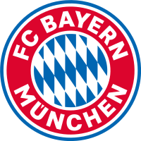
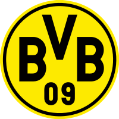
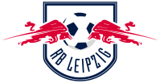
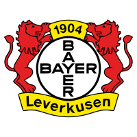
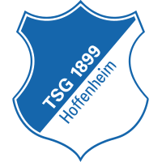
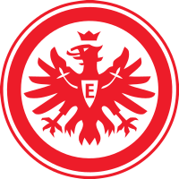
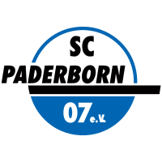
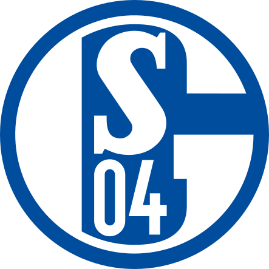
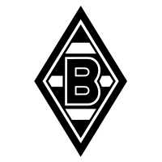

الدوري الإنجليزي
الدوري الإنجليزي الدوري الإيطالي
الدوري الإيطالي الدوري الفرنسي
الدوري الفرنسي البطولة المغربية
البطولة المغربية الدوري الألماني — موسم 2026-27 • الجولة 10
الدوري الألماني — موسم 2026-27 • الجولة 10
✓ موثق المصدر: ESPN (site.api.espn.com + sports.core.api.espn.com) — السبت 21 نونبر 2026 — الهدافون: ESPN — آخر تحقق: السبت 21 نونبر 2026. الجدول الكامل موثق.
جدول الترتيب
الجولة 11 — 21–22 نونبر 2026| # | الفريق | لعب | فاز | تعادل | خسر | فرق | نقاط |
|---|---|---|---|---|---|---|---|
| 1 |  بايرن ميونيخ | 10 | 6 | 4 | 0 | +20 | 22 |
| 2 |  بوروسيا دورتموند | 9 | 6 | 3 | 0 | +9 | 21 |
| 3 |  فرايبورغ فرايبورغ | 9 | 6 | 1 | 2 | +10 | 19 |
| 4 |  لايبزيغ | 9 | 6 | 0 | 3 | +14 | 18 |
| 5 |  باير ليفركوزن | 9 | 5 | 1 | 3 | +3 | 16 |
| 6 | فيردر بريمن | 9 | 4 | 3 | 2 | +2 | 15 |
| 7 |  إلفرسبرغ إلفرسبرغ | 9 | 4 | 1 | 4 | -1 | 13 |
| 8 |  شتوتغارت شتوتغارت | 9 | 4 | 0 | 5 | 0 | 12 |
| 9 |  هوفنهايم | 9 | 4 | 0 | 5 | -1 | 12 |
| 10 |  آينتراخت فرانكفورت | 9 | 3 | 3 | 3 | -5 | 12 |
| 11 |  هامبورغ هامبورغ | 9 | 4 | 0 | 5 | -10 | 12 |
| 12 |  ماينز ماينز | 9 | 3 | 1 | 5 | -1 | 10 |
| 13 |  بادربورن | 9 | 2 | 4 | 3 | -3 | 10 |
| 14 |  كولن كولن | 10 | 2 | 4 | 4 | -4 | 10 |
| 15 |  أوغسبورغ أوغسبورغ | 9 | 2 | 3 | 4 | 0 | 9 |
| 16 |  يونيون برلين يونيون برلين | 9 | 1 | 4 | 4 | -14 | 7 |
| 17 |  شالكه | 9 | 1 | 3 | 5 | -6 | 6 |
| 18 |  بوروسيا مونشنغلادباخ | 9 | 1 | 1 | 7 | -13 | 4 |
هدّافو الدوري
1نيكلاس فولكروغفيردر بريمن9
2باتريك شيكباير ليفركوزن8
3مايكل أوليزبايرن ميونيخ6
4فيليب تيتزماينز6
ماينز65يونس ابن طالبآينتراخت فرانكفورت6
6جوناثان بوركاردتآينتراخت فرانكفورت5
7إرميدين ديميروفيتششتوتغارت5
شتوتغارت58يويتو سوزوكيفرايبورغ5
فرايبورغ59مايكل غريغوريتشأوغسبورغ5
أوغسبورغ510كريستوفر نكونكولايبزيغ5
مباريات ونتائج
كل المباريات ←الدوري الألمانييونيون برلين15:30لايبزيغ2026-11-21 15:30
يونيون برلين15:30لايبزيغ2026-11-21 15:30الدوري الألمانيباير ليفركوزن15:30بادربورن2026-11-21 15:30
الدوري الألمانيبوروسيا مونشنغلادباخ15:30بوروسيا دورتموند2026-11-21 15:30
الدوري الألمانيآينتراخت فرانكفورت15:30هوفنهايم2026-11-21 15:30
الدوري الألمانيإلفرسبرغ15:30فرايبورغ2026-11-21 15:30
إلفرسبرغ15:30فرايبورغ2026-11-21 15:30الدوري الألمانيشالكه18:30شتوتغارت2026-11-21 18:30
شتوتغارت2026-11-21 18:30الدوري الألمانيأوغسبورغ15:30ماينز2026-11-22 15:30
أوغسبورغ15:30ماينز2026-11-22 15:30الدوري الألمانيفيردر بريمن17:30هامبورغ2026-11-22 17:30
هامبورغ2026-11-22 17:30مساحة إعلانية — CPA (Placeholder)تُضاف هنا عروض موثوقة بعد اختيارها — بدون نوافذ منبثقة وبدون روابط مراهنات.لا يوجد أي عرض حي أو رابط خارجي في هذه المساحة حالياً.
أخبار البوندسليغا
كل الأخبار ←لا توجد أخبار منشورة عن هذا الدوري بعد في أرشيف الموقع.